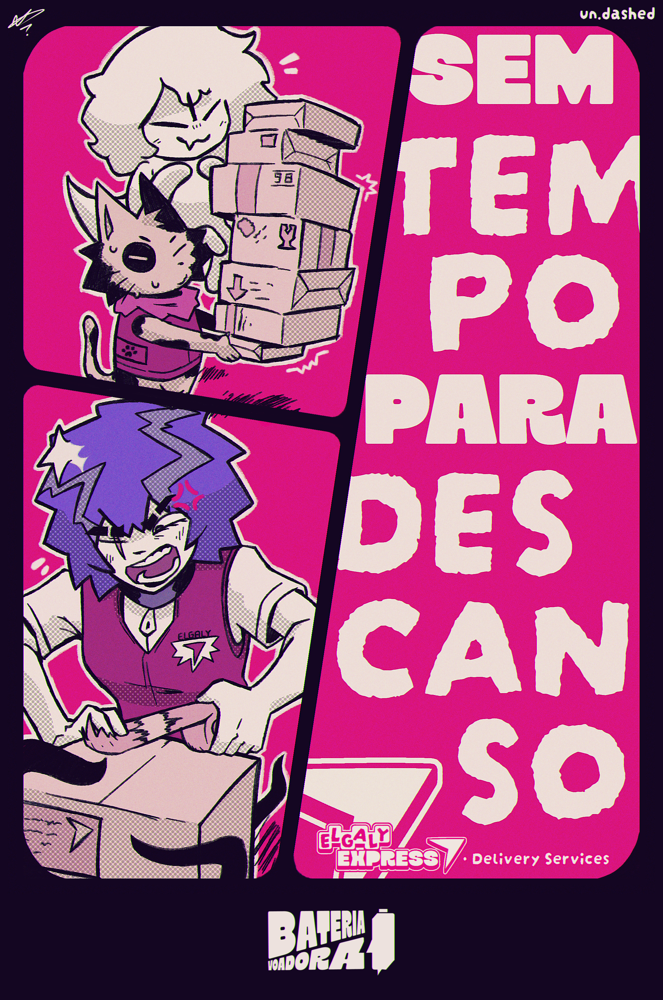
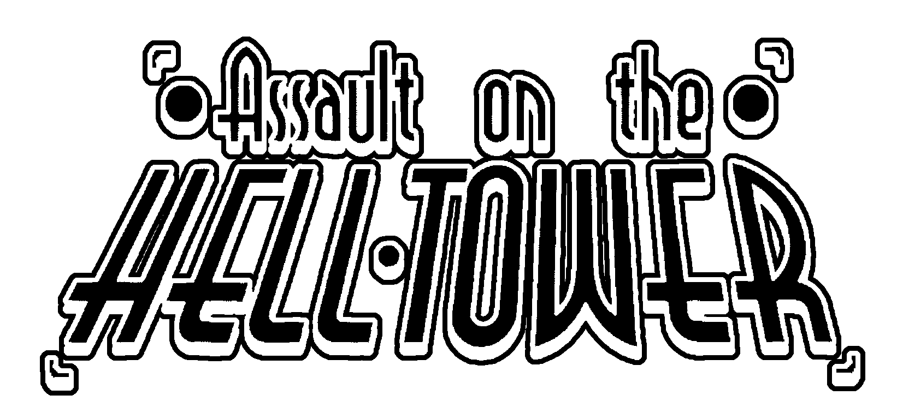
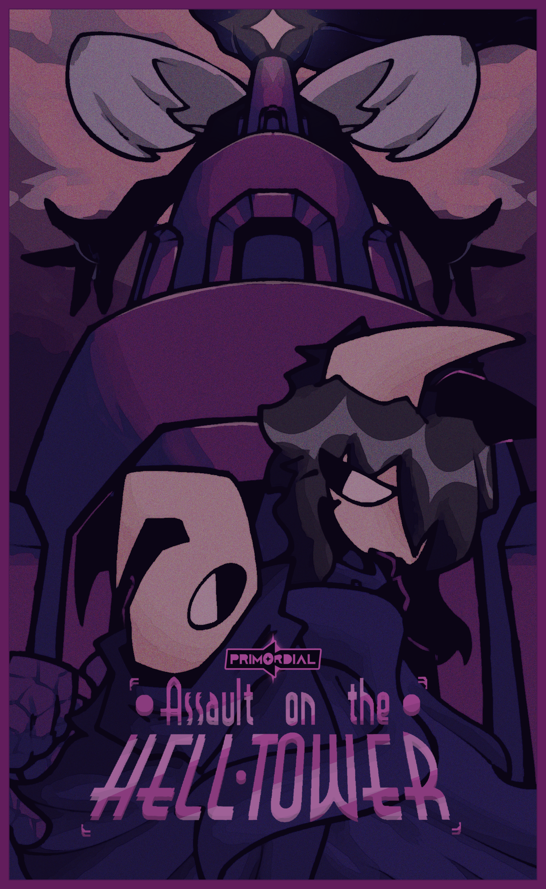
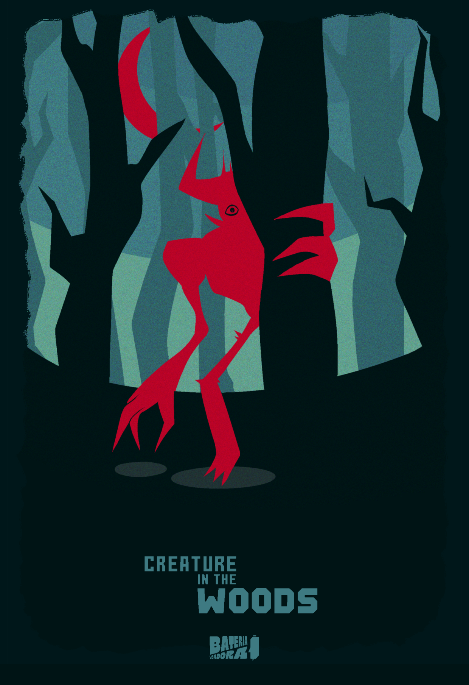
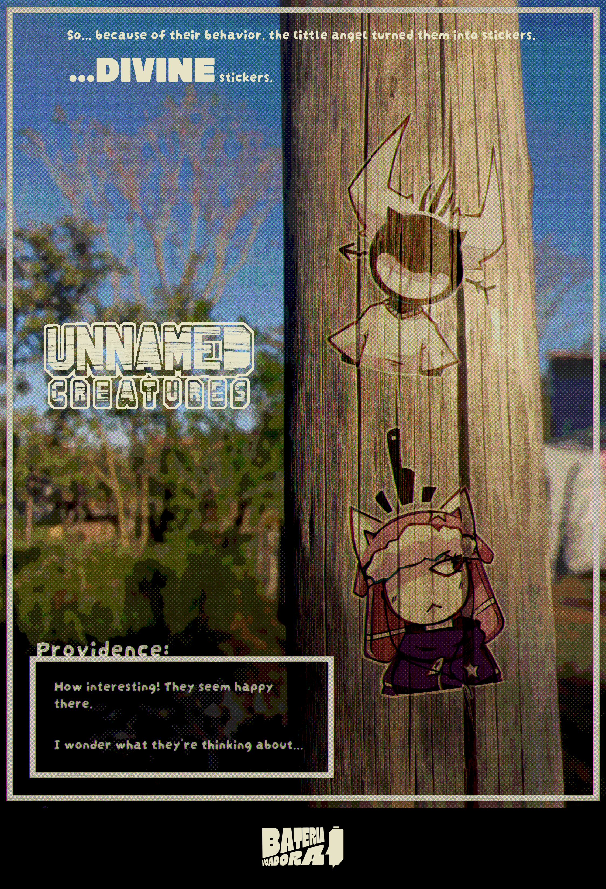

Sobre a Bateria Voadora
Bateria Voadora (Flying Battery) é um estúdio de jogos e quadrinhos, com itens já sendo desenvolvidos como o jogo Assault on the Helltower e a história Elgaly Express - Delivery Services.

Elgaly Express - Delivery Services
2026 - História em quadrinhos e outras mídias.
Elgaly Express conta a história de Midnight Maves, uma jovem que trabalha para uma agência de correios na Ilha de Elgaly Edge junto com seus colegas de trabalho: Brave Purrington, um gato que anda sobre duas patas e fala muita besteira, além de ser rabugento. e Drizzle, um monstro que veio direto do abismo só para entregar cartas.
De dia, entregam cartas, mas à noite, enfrentam os perigos de tocar em uma banda de Nu Metal em praças públicas, mas sempre enfrentando a operadora do metrô onde praticam... A Elgaly Metro.


Assault on the Helltower
2024 - Jogo Eletrônico para computador.
Arkus é o jovem guardião da grande e poderosa Torrinferno. O seu objetivo? Cuidar para que o poder não caia em mãos erradas. Porém... Os Três Mentirosos decidem invadir a torre a mando de Ambriance, o Cometa de Luz. E agora, cabe a Arkus os expulsar os invasores e eliminar a ameaça de uma vez por todas.
O jogo ainda está em desenvolvimento, mas sua DEMO pode ser jogada através do ITCH.IO e GX.games:
Ver mais

Creature in the Woods
2025 - História e jogo conceitual.
Creature in the Woods é apenas um conceito, mas que deve ser mencionado com honra. Na grande cidade de Lua Crescente, Estado de Awengart, uma grande mata guarda segredos de um mundo distante. A Criatura, como é chamada pelos especialistas da organização "CRAWLNICS, Inc." é uma entidade que surgiu ali, e vive ali. Dizem que ao entrar na mata, sair é um desafio maior do que respirar de baixo d'agua... A única pessoa que entrou na mata nunca saiu.

Unnamed Creatures
2026 - História derivada de Elgaly Express.
Unnamed Creatures é um título que surge de Elgaly Express. Monstrinhos sem nomes, que habitam os cantos mais sombrios do universo, conversando com outras entidades estranhas e misteriosas que rondam a existência. Por mais que não sejam do mal, nem do bem, devem tomar cuidado para não serem pegos pela anjo Providente, pois ela acha que eles não deveriam existir.

Itens não mencionados
- Overtake Inc. - Laboratórios de Pesquisa Militar. (2023)
- Beat 'Em, Lucius! (2023 - Jogo)
- Deathness Awaits (2024)
- Rivals to the Death (2024 - Jogo)
- V-DO's Math Test (2024 - Jogo)
Próximas Missões
| Projeto | Status | Próximo passo |
|---|---|---|
| Assault on the Helltower | Demo disponível | Conquistar a Torrinferno |
| Elgaly Express | Em produção | Preparar a próxima entrega |
| Creature in the Woods | Conceito | Entrar na mata |
| Unnamed Creatures | Em criação | Descobrir seus nomes |